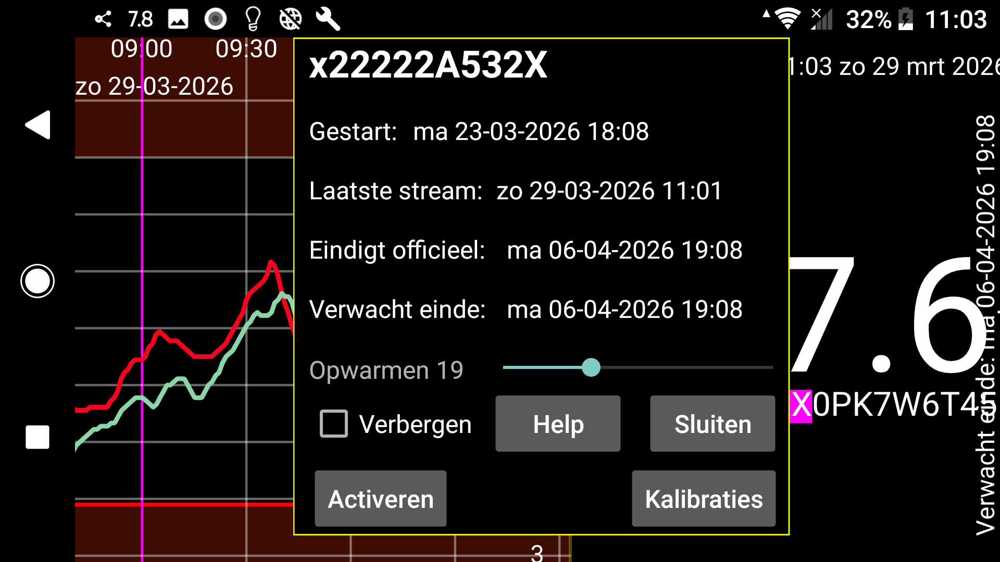

ar de es hi it ja ko nl ru uk uz en
Toont de start, de laatste stream, de laatste scan en de verwachte en officiële eindtijden van de sensor.
Opwarmen: Voor Sibionics- en Linx/Lumiflex/Aidex X-sensoren kun je het aantal minuten van de opwarmperiode wijzigen. Alle functies negeren gegevens tijdens de opwarmperiode: de curve op het scherm, statistieken, geëxporteerde gegevens en gegevens die zichtbaar zijn op de webserver. Ook met terugwerkende kracht.
Verbergen: Aangevinken verbergt deze curve. Behalve door het vinkje weg te halen, kun je de curve ook weer zichtbaar maken door rechtsonder op het scherm op “Zichtbaar” te drukken.
Kalibraties: Als je het bloedglucoselabel hebt opgegeven in linkermenu→Instellingen→Kalibratie en bloedglucosemetingen hebt ingevoerd via linkermiddenmenu→Hoeveelheid, die niet zijn uitgesloten, kun je op de knop “Kalibraties” drukken om een lijst met uitgevoerde kalibraties te krijgen. Zie: https://www.juggluco.nl/Juggluco/index.html#calibration
Activeren: Voor beëindigde sensoren wordt de knop “Activeren” weergegeven. Door op deze knop te drukken kun je de sensor opnieuw gebruiken zonder de datamatrix op de verpakking te scannen. Je kunt dit ook gebruiken voor Libre 2- en 3-sensoren, maar als je de sensor met Juggluco op een andere telefoon hebt gescand, moet je de sensor altijd opnieuw via NFC scannen om de sensor weer terug te krijgen.